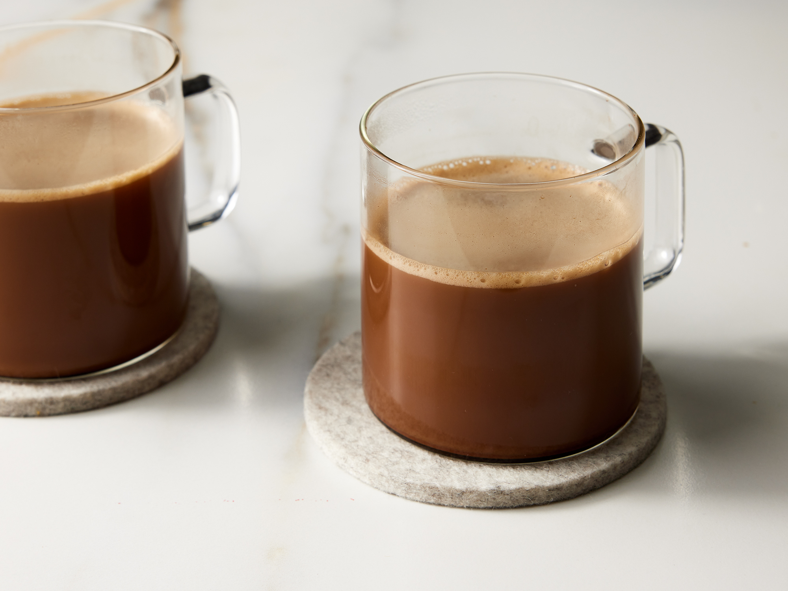

Mocha Coffee

Mocha coffee is extremely easy to make in this recipe for a simple coffee with chocolate.
I call this simple omelet recipe "Italian" for a couple of reasons. First, I used olive oil instead of butter, and second, I cooked the eggs quickly in a hot pan, letting them get a little golden brown. The traditional French omelets are thicker and cooked much more gently.
Ingredients
- 1 cup hot brewed coffee
- 1 tablespoon unsweetened cocoa powder
- 1 tablespoon white sugar
- 2 tablespoons milk
Steps
- Gather all ingredients.
- Pour hot coffee into a mug. Stir in cocoa, sugar, and milk.